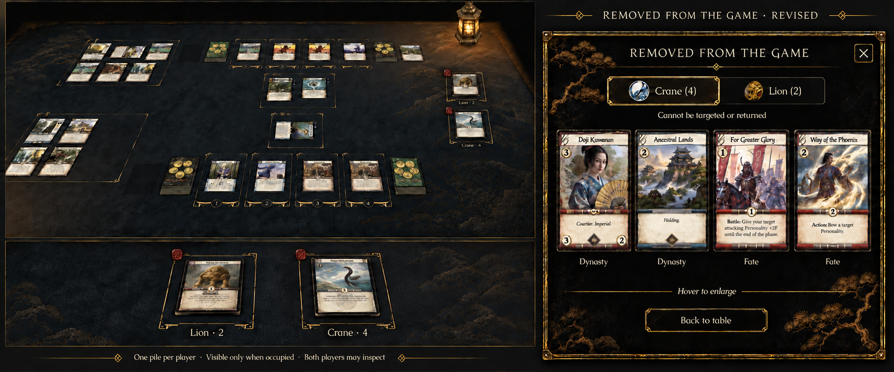
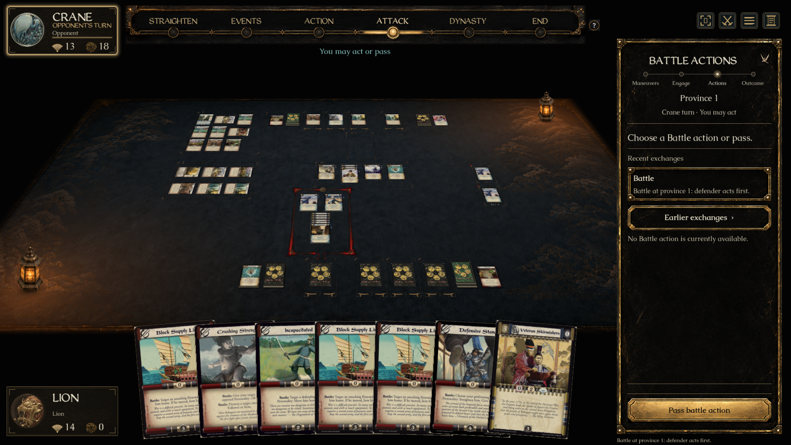
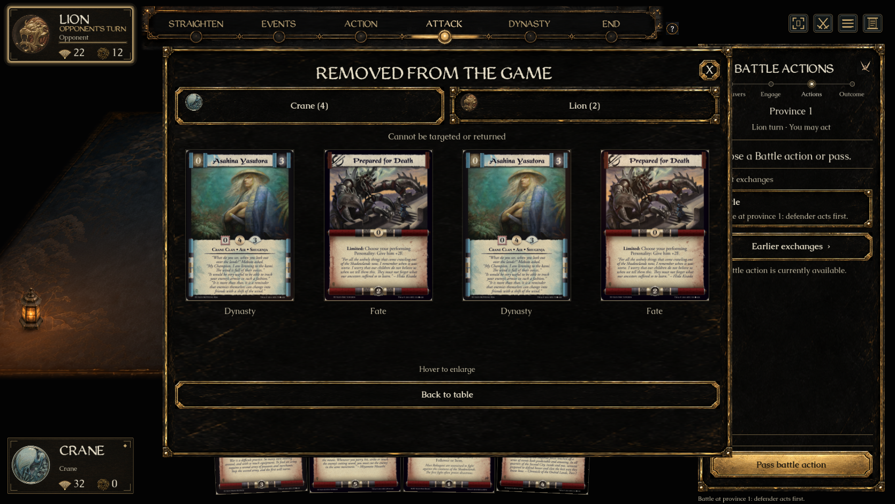
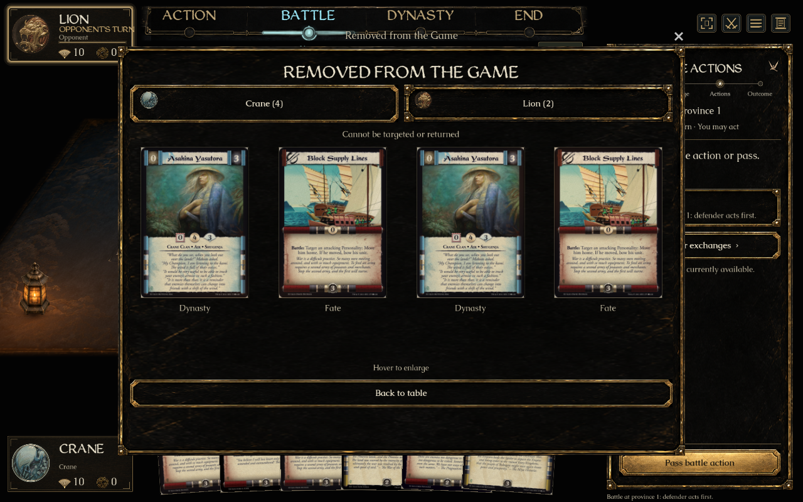

Approved concept and native Godot implementation. Actual card scans replace illustrative concept cards. The native captures use explicit public-card visual fixtures; empty piles are also checked for complete absence.



